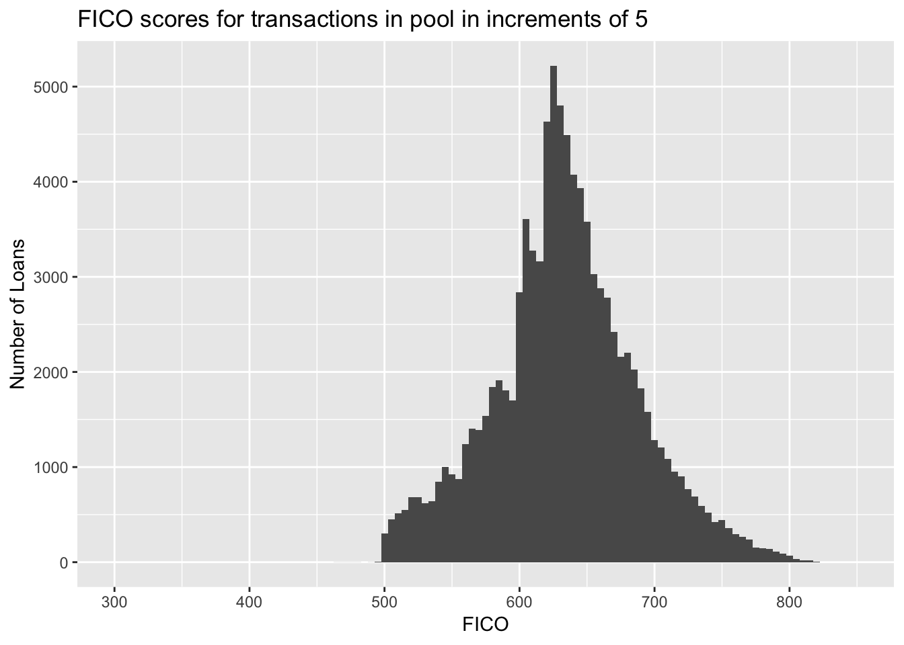
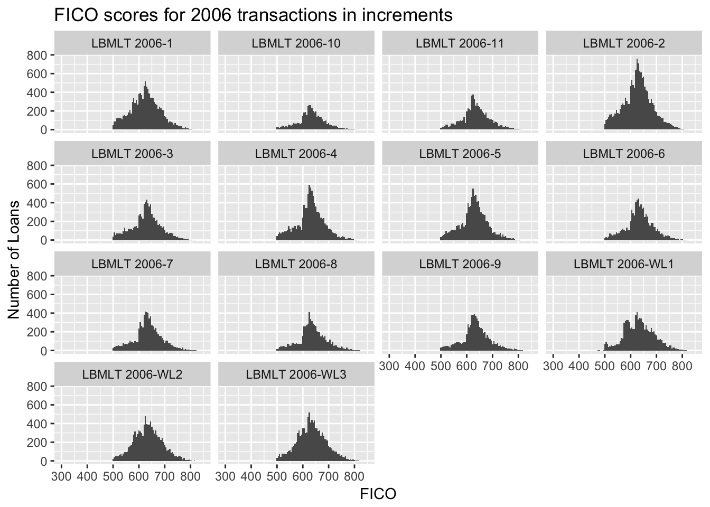

4 The Subprime Mortgage Crisis Unfolds in early 2007
Keywords: large database, MySQL, Python, data wrangling, data mining
4.1 Case Description
Washington Mutual Bank originated subprime loans as one of its home loan mortgage types. The term subprime has always been hard to pin down precisely. Generally, though, they represented higher-interest rate loans to less creditworthy borrowers. In competition with other lenders, the risks types, such as the borrower’s debt-to-income ratio, the combined loan-to-value ratio (considering both the first and any second lien loan), the level of income and asset verification, and the purpose of the loan began to become layered. That is, the cumulative risk increased. And too much reliance, perhaps, was being placed on ever-increasing home values.
In early 2007, a marketing specialist from Washington Mutual Bank’s Wall Street subsidiary, called me to say that investors were complaining about the peformance of our subprime securities issued in 2006. I was the principal lawyer in-house dealing with mortgage backed securities, and he wanted to know what kinds of written materials he could provide.
I had some questions that had no ready answers:
- How did our pools of mortgage loans differ?
- What do we mean by performance?
We could begin, I suggested, by looking at the tape for the January 2006 deal, LBMLT 2006-1, to see how the origination characteristics differed from competing deals. We could also pull the monthly report that showed last payment date, delinquency status and other data. He said that he’d try to get that together, but it wasn’t really his job.
This is the case that Donald Rumsfelt (known knowns, known unknowns and unknown unknowns) missed: Unknown knowns, information we had that was scattered throughout the organization.
It became apparent that I wasn’t going to get any help dealing with my rising sense of unease that the company faced potential liabilities as a result of these transactions. I was senior enough to set my own priorities so I decided to assemble the data to see what I could make of it.
4.2 Data Wrangling
There were 14 transactions issued in 2006, all of which were accompanied by tapes similar to the LBMLT 2006-1 deal with origination data. I also looked at default data, from over 100 spreadsheets, many with manual changes, that had to be beaten into submission.
Fortunately the origination tapes, while wrapped in HTML, were tagged with
<pre>payload</pre> pairs, making their extraction easy. One of the typical tasks was converting dates into ISO form – from 3/6/2006, say, to 2006-03-06, for which I turned to Python.
"""
function to convert dates into date objects
"""
from datetime import datetime
import re
def canonize_date(slashdate):
"""convert date strings from 3/1/2009 to 2009-03-01"""
dateString = re.compile(r'(\d{1,2})/(\d{1,2})/(\d{4})') # match 3/1/2009
dash = '-'
parts = dateString.search(slashdate).groups()
composed = parts[-1] + dash + parts[-3] + dash + parts[-2]
return composed
def make_date(entry):
"""
Convert string in form 2011-10-25 to a date object
"""
return datetime.date(datetime.strptime(entry, "%Y-%m-%d"))
4.3 Database conversion
There were too many records (nearly 125K) to work in memory, which lead me to create my first MySQL database.
+---------+---------------+------+-----+---------+-------+
| Field | Type | Null | Key | Default | Extra |
+---------+---------------+------+-----+---------+-------+
| ctapeno | decimal(10,0) | YES | MUL | NULL | |
| fpd | date | YES | | NULL | |
| obal | decimal(10,0) | YES | | NULL | |
| ltype | varchar(15) | YES | | NULL | |
| cservno | decimal(10,0) | YES | | NULL | |
| st | varchar(4) | YES | | NULL | |
| odate | date | YES | | NULL | |
| margin | decimal(10,0) | YES | | NULL | |
| oltv | decimal(10,0) | YES | | NULL | |
| lien | tinyint(4) | YES | | NULL | |
| second | decimal(10,0) | YES | | NULL | |
| pflag | varchar(1) | YES | | NULL | |
| pterm | tinyint(4) | YES | | NULL | |
| pmon | tinyint(4) | YES | | NULL | |
| grade | varchar(5) | YES | | NULL | |
| fico | decimal(10,0) | YES | | NULL | |
| cbal | varchar(1) | YES | | NULL | |
| sbal | decimal(10,0) | YES | | NULL | |
| deal | varchar(15) | YES | | NULL | |
| orate | decimal(10,0) | YES | | NULL | |
| ptype | varchar(10) | YES | | NULL | |
| otype | varchar(20) | YES | | NULL | |
| dtype | varchar(15) | YES | | NULL | |
| purpose | varchar(25) | YES | | NULL | |
| lg | tinyint(4) | YES | | NULL | |
| rterm | smallint(6) | YES | | NULL | |
| pmi | varchar(1) | YES | | NULL | |
| cdate | date | YES | | NULL | |
| mdate | date | YES | | NULL | |
| pexp | date | YES | | NULL | |
| pptype | varchar(4) | YES | | NULL | |
| icode | varchar(4) | YES | | NULL | |
| duedate | date | YES | | NULL | |
| scap | tinyint(4) | YES | | NULL | |
| dti | decimal(10,0) | YES | | NULL | |
| oterm | smallint(6) | YES | | NULL | |
| oservno | decimal(10,0) | YES | | NULL | |
| cltv | decimal(10,0) | YES | | NULL | |
| rdate | date | YES | | NULL | |
| aterm | smallint(6) | YES | | NULL | |
| zip | int(11) | YES | | NULL | |
| city | varchar(25) | YES | | NULL | |
| status | varchar(10) | YES | | NULL | |
+---------+---------------+------+-----+---------+-------+
43 rows in set (0.00 sec)The data dictionary:
+---------------------------+------------+-------------------------------------+
| tapefield | tablefield | desciption |
+---------------------------+------------+-------------------------------------+
| LOAN_NUMBER | ctapeno | serial number of loan on closing ta |
| FPDATE | fpd | first schedule payment date after o |
| ORIGBAL | obal | original note balance |
| LOANTYPE | ltype | loan type |
| SERVICING_LOAN_NUMBER | servno | customer account number |
| STATE | st | state where mortgaged property is l |
| FUNDDATE | odate | date on which the mortage loan was |
| MARGIN | margin | "for ARMs, the percentage added to |
| OLTV | oltv | original loan to value ratio |
| LIEN | lien | priority |
| SUBLIEN | second | "balance of sublien, if record is a |
| PREPAY_IND | pflag | whether loan has prepayment penalty |
| PREPAY_TERM | pterm | term of any prepayment penalty |
| PREPAY_MNTH | pmon | number of months of prepayment pena |
| GRADE | grade | credit grade of loan |
| CALCFICO | cfico | whether fico was calculated |
| CALCBLN | cbal | whether cut off date balance was ca |
| SCHDBAL | sbal | schedule balance sold to deal |
| SECURITY | deal | securitization identifier |
| ORIGRATE | orate | note rate for initial payment |
| PROPTYPEDESC | ptype | property type |
| OCCUPANCYDESC | otype | occupancy type |
| DOCTYPEDESC | dtype | documentation type |
| PURPOSEDESC | purpose | loan purpose |
| POOLGROUP | lg | loan group |
| ORIG_CALCRTERM | rterm | calculated remaining months to matu |
| PMI | pmi | whether MI is in effect |
| DEAL_CLOSE_DATE | cdate | closing date for deal |
| MTDATE | mdate | matuity date for note |
| PREPAY_EXP_DATE | pexp | expiration date of prepayment penal |
| PREPAY_RATE_CODE | pptype | prepayment penalty type |
| INVESTOR_CODE | icode | investor code |
| DUEDATE | duedate | date on which first payment due to |
| SUBRATE_CAP | scap | subrate cap |
| DEBTRATIO | dti | front-end debt-to-income ratio |
| OTERM | oterm | original term |
| ORIG_SERVICING_LOAN_NUMBE | oservno | original servicing number |
| PROSUPP_CLTV | cltv | combined LTV |
| ORIG_NRADATE | rdate | roll date |
| ATERM | aterm | amortization term |
| ZIP | zip | postal code |
| CITY | city | address city |
| STATUS | status | reserved |
+---------------------------+------------+-------------------------------------+
43 rows in set (0.00 sec)After creating these for each of the transactions, I combined them into a single file, used a supplemental zipcode lookup table to identify the metropolitan area (for possible use with the Case Shiller Index of Home Prices) and added fields for loan payment history.
The resulting table with the $25 billion in mortgage loans:
+----------+-------------+
| count(*) | sum(obal) |
+----------+-------------+
| 124645 | 25542466576 |
+----------+-------------+4.4 Preliminary analysis, based on FICO scores
In 1995, Freddie Mac advised lenders that it had found that consumer credit scores developed by Fair, Issac and Company, Inc. (FICO scores) strongly predicted the likelihood of default on mortgage loans. Freddie Mac’s communication is reproduced as Attachment 2 in testimony before the U.S. House Committee on Oversight and Government Reform, the Pinto testimony, beginning at page 28 of the pdf.
A traditional description of the limitations of credit score is similar to the following:
Third-party credit reporting organizations provide credit scores as an aid to lenders in evaluating the creditworthiness of borrowers. Although different credit reporting organizations use different methodologies, higher credit scores indicate greater creditworthiness. Credit scores do not necessarily correspond to the probability of default over the life of the related mortgage loan because they reflect past credit history, rather than an assessment of future payment performance. In addition, the credit scores shown were collected from a variety of sources over a period of weeks, months or longer, and the credit scores do not necessarily reflect the credit scores that would be reported as of the date of this prospectus supplement. Credit scores also only indicate general consumer creditworthiness, and credit scores are not intended to specifically apply to mortgage debt. Therefore, credit scores should not be considered as an accurate predictor of the likelihood of repayment of the related mortgage loans.
See the credit disclosure beginning on page S-18 by a Washington Mutual affiliate in 2002.
The rating agencies and buyers involved in residential mortgage backed securities, however, attached considerable importance to credit scores, generically referred to as FICOs. Therefore, the FICO composition was an obvious starting point.

FICO scores have a minimum value of 300, and a maximum value of 850. The summary statistics are:
| Min. | 1st Qu. | Median | Mean | 3rd Qu. | Max. |
|---|---|---|---|---|---|
| 0 | 600 | 631 | 631.9481 | 665 | 821 |
and the mode is 620. The minimum score represents loans without FICO scores:
| deal | fico |
|---|---|
| LBMLT 2006-4 | 0 |
| LBMLT 2006-WL2 | 0 |
Sixteen other loans had scores below 500:
| deal | fico |
|---|---|
| LBMLT 2006-1 | 498 |
| LBMLT 2006-2 | 491 |
| LBMLT 2006-2 | 492 |
| LBMLT 2006-2 | 470 |
| LBMLT 2006-2 | 487 |
| LBMLT 2006-2 | 465 |
| LBMLT 2006-2 | 481 |
| LBMLT 2006-2 | 493 |
| LBMLT 2006-WL1 | 497 |
| LBMLT 2006-WL1 | 497 |
| LBMLT 2006-WL1 | 482 |
| LBMLT 2006-WL1 | 498 |
| LBMLT 2006-WL1 | 494 |
| LBMLT 2006-WL1 | 473 |
| LBMLT 2006-WL1 | 496 |
| LBMLT 2006-WL3 | 498 |
The cliffs around 500 (below which only the small number of loans in the tables above are included), 600, 630 and 635 represent the cumulative segmentation of the pools to obtain favorable ratings. Not all deals followed this approach, however.

The variability among transactions suggest that if FICO scores have an influence on default rates, it may be necessary to stratify the data to obtain useful results.
4.5 Next steps
A second dataset with 12-month payment data was prepared. I plan to divide it into a training set and a testing set. Starting with linear regression of FICO on delinquency history, then trying multiple linear regression and other related techniques, I will develop models based on loan characteristics to “predict” loan performance.